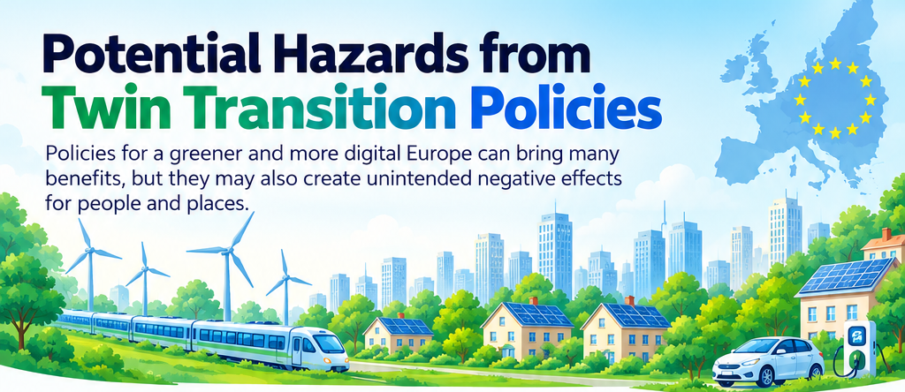
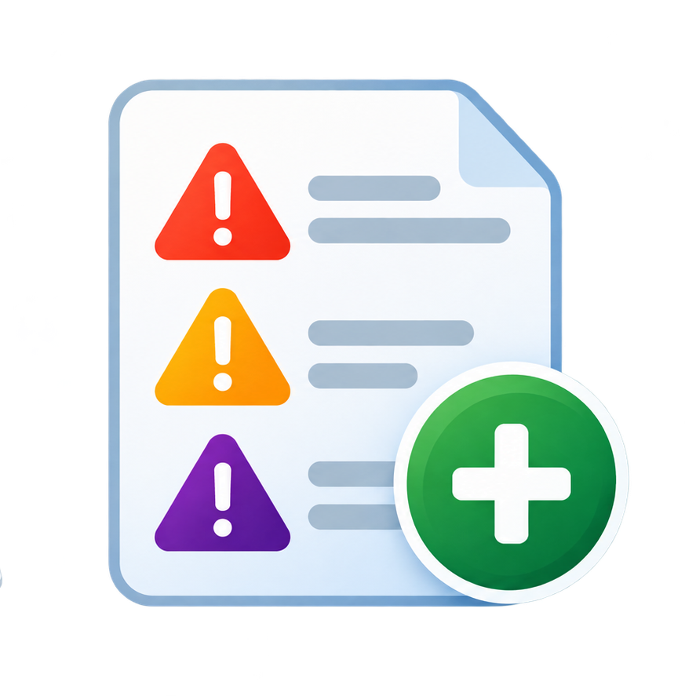

What are hazards?
Hazards are potential negative consequences or unintended effects that can arise from green and digital transition policies, affecting people, communities and places.
Most relevant for your region
No regional hazards are available.

Additional hazardsNo additional hazards are available.
Why it matters
Understanding these hazards helps design fairer, more inclusive policies that ensure the benefits of the green and digital transition are shared by everyone.